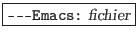
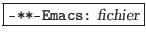
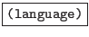

suivant: Clés de Fonction
monter: Commandes de base de
précédent: Introduction
Table des matières
Index
L'organisation de l'écran d'"emacs" se décompose de la façon suivante :
- Position du curseur
-
C'est à partir de ce point que seront executées les commandes "emacs".
- Echo area
-
Zone en bas de l'écran où sont affichés les messages relatifs à des commandes
(sauvegarde, messages d'erreur, intervention utilisateur). Cette zone
correspond au buffer "LSE$MESSAGE" de l'éditeur "LSEDIT"
d'OpenVMS.
- Affichage du buffer
-
Cette ou ces zones permettent de visualiser le contenu du ou des fichiers
à éditer. Elles correspondent aux buffers associés à des fichiers
de l'éditeur "LSEDIT" d'OpenVMS.
La barre associée à un buffer contient les informations suivantes :
- Elle indique si le buffer courrant a été modifié ou non.
Si le buffer n'a pas été modifié, elle commencera par :

Dans le cas contraire, elle commencera par :

- Chaque buffer peut être associé à un langage de programmation.
Cette opération est effectuée automatiquement lors de
l'ouverture du fichier après son analyse par
"emacs". Si tel est le cas, le langage associé
sera affiché sous la forme suivante :

- Enfin, "emacs" indiquera la position courrante
du curseur dans le fichier (numéro de ligne et
de colonne) et sa position relative (en pourcentage).
Pour plus de précisions sur la notion de "buffers", reportez-vous
à la section ![[*]](crossref.png) .
.
suivant: Clés de Fonction
monter: Commandes de base de
précédent: Introduction
Table des matières
Index
baudry@esme.fr